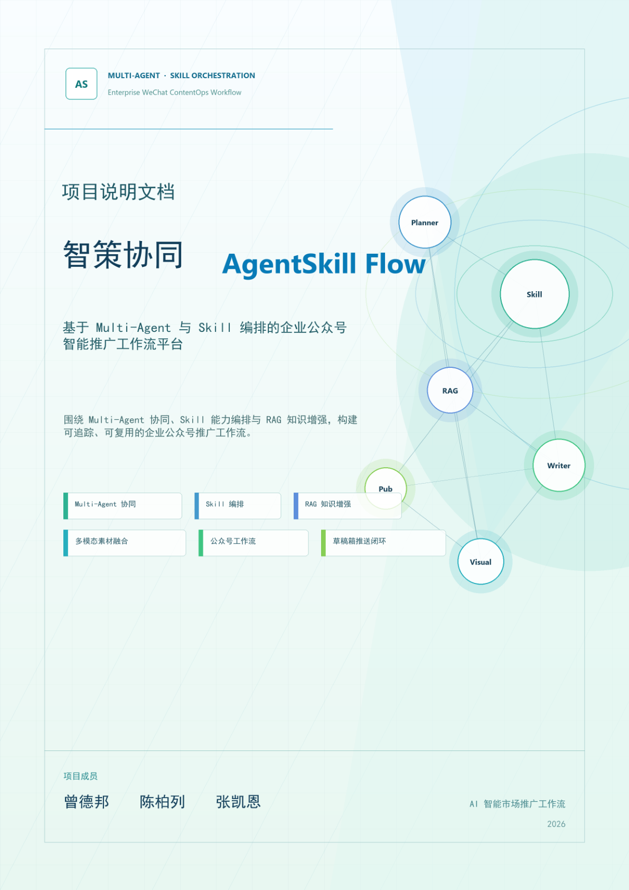
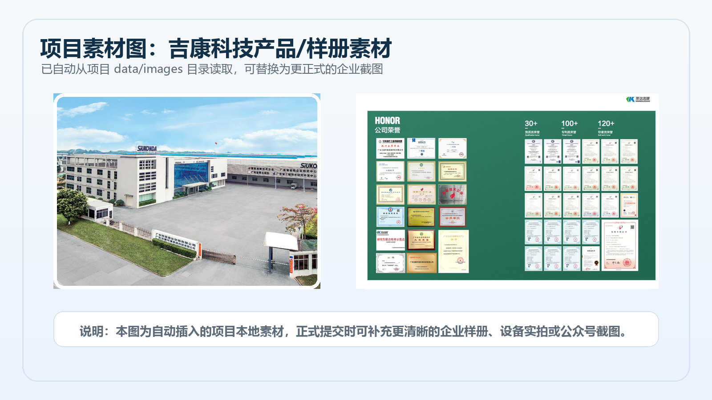

业务问题
传统公众号内容生产依赖人工查资料、写文案、找配图、排版和审核。面对专业设备参数、环保政策和行业热点时，内容质量和产出效率都不稳定。
RAG · Multi-Agent · Vue + FastAPI
面向环保设备企业内容运营场景，把企业知识库、外部资讯采集、Agent 工作流、公众号排版预览和草稿箱发布组织成一条可追踪的 AI 内容生产流水线。

Project Overview
传统公众号内容生产依赖人工查资料、写文案、找配图、排版和审核。面对专业设备参数、环保政策和行业热点时，内容质量和产出效率都不稳定。
平台通过 RAG 召回企业资料和行业知识，再由多 Agent 拆解任务、生成文章、处理素材、渲染 HTML，并提供预览、保存和发布入口。
负责前后端分离架构、FastAPI 接口、RAG 知识库、LangGraph 工作流、公众号生成流水线、前端页面和演示文档整理。
Demo Video
部署到 GitHub Pages 前，请确认视频中没有 API Key、手机号、邮箱、后台 Token 或企业敏感资料。
System Design

Core Features
支持 TXT/PDF 文档导入、文本切分、Embedding 向量化、MD5 去重、Chroma 持久化和 Top-K 检索。
基于 LangGraph 将需求分析、资料增强、写作、排版、交付拆成可观察节点，提升生成过程可控性。
后端线程执行生成任务，前端轮询展示 Agent 日志、当前阶段和最终结果，避免长任务黑盒化。
将写作策略、RAG 上下文、外部资讯和图片素材注入流水线，输出适配公众号展示的 HTML 成稿。
支持预览结果保存到历史作品库，并预留同步到微信公众号草稿箱的发布入口。
使用 VS Code + Codex 辅助需求拆解、模块实现、接口联调、异常排查和简历级文档沉淀。
Material & Output

Run Locally
pip install -r requirements.txt
uvicorn backend.app:app --reload --host 127.0.0.1 --port 8000cd frontend
npm install
npm run devcd project_showcase
start index.html开源或部署前，请删除真实 API Key、.env、日志、node_modules、__pycache__、大体积缓存和敏感业务资料。